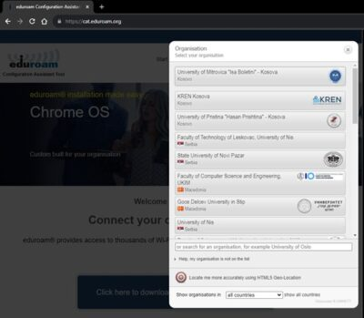
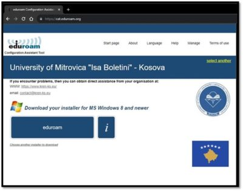

Opsioni 1-Udhëzim për instalim në telefon
Opsioni 2-Udhëzim për instalim në kompjuter
-
Hapeni linkun:
eduroam Configuration Assistant Tool
-
Klikoni në butonin
“Click here to download your eduroam installer”.
-
Zgjidhni nga lista institucionin tuaj, ose përdorni “search”.

-
Shkarkoni aplikacionin duke klikuar në buton “eduroam”

-
Pas instalimit në kompjuter nuk do të gjeni aplikacionin e veçantë.
Vazhdoni me procedurat standarde të lidhjes me
wi-fi
në kompjuter, gjeni wi-fi “eduroam”
dhe shënoni kredencialet tuaja si për çdo wi-fi tjetër. Keni kujdes,
domain-i përfundon me “.ks”